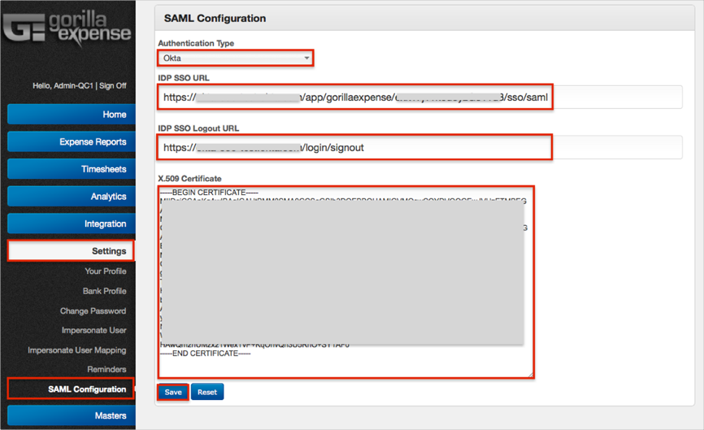
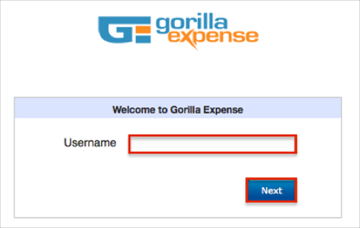

Login to your Gorilla Expense account as an Administrator.
Navigate to Settings > SAML Configuration.
Enter the following:
Authentication Type: Select Okta.
IDP SSO URL: Copy and paste the following:
Sign into the Okta Admin Dashboard to generate this variable.IDP SSO Logout URL: Enter the following:
Sign into the Okta Admin Dashboard to generate this variable.X.509 Certificate: Copy and paste the following (PEM Text Format):
Sign into the Okta Admin Dashboard to generate this variable.
Click Save.

Done!
Notes:
IdP-initiated flows and SP-initiated flows are both supported.
Just In Time (JIT) Provisioning is not supported.
Open: https://www.gorillaexpense.info/GorillaPro/web/User/LogOnGeneric/
Enter your Username.
Click Next.
